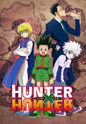

Bem-vindos ao universo de Hunter x Hunter!
⚡ Sobre o anime
Hunter x Hunter é uma obra criada por Yoshihiro Togashi,um verdadeiro Gênio A história acompanha Gon Freecss, um garoto que deseja se tornar um Hunter e encontrar seu pai, Ging.
Durante sua jornada, Gon conhece Killua, Kurapika e Leorio, enfrentando desafios e vivendo grandes aventuras.

✍️ O autor
Yoshihiro Togashi também é conhecido por criar Yu Yu Hakusho. Hunter x Hunter começou a ser publicado em 1998 na revista Weekly Shonen Jump.
👥 Personagens principais
- Gon Freecss — protagonista da história.
- Killua Zoldyck — melhor amigo de Gon e também filho de uma famosa família de assassinos.
- Kurapika — busca recuperar os olhos de seu clã.
- Leorio — deseja se tornar médico e ficar rico (top melhores personagens de HxH).
- Hisoka — personagem misterioso e imprevisível (e muito criminoso,no mínimo).
💡 Curiosidades
Hunters são pessoas licenciadas que realizam diversas missões,podem ser dos mais diversos tipos,como hunter culinário e etc.
O Nen é o sistema de poderes do universo da obra. Inclusive,na minha opinião é o MELHOR sistema de poder dos animes.
Teve duas versões em anime.Uma em 1999 com trocentos ep,e o anime de 2011 com 148 episódios.
🏆 Por que é tão bom?
Para muitos fãs, Hunter x Hunter se destaca pela criatividade, pelo desenvolvimento dos personagens e pelas batalhas que envolvem estratégia e inteligência.
🔗 Links úteis
📖 Wiki de Hunter x Hunter🌐 Página oficial da VIZ